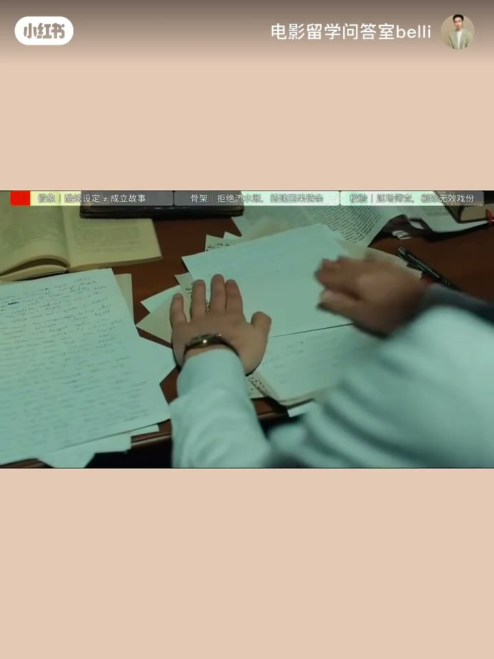
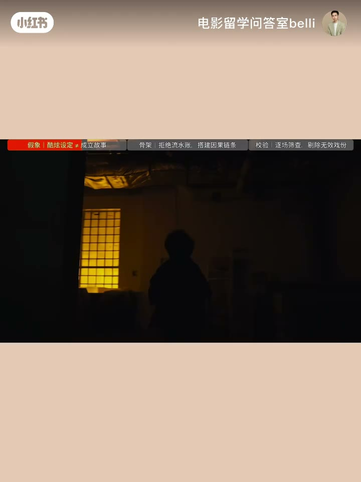
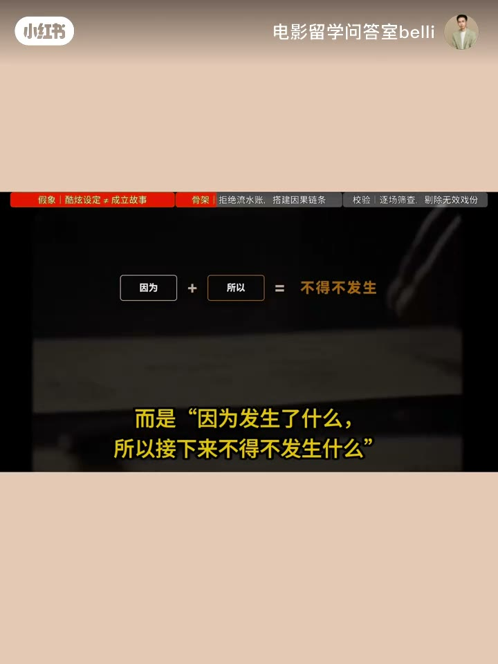
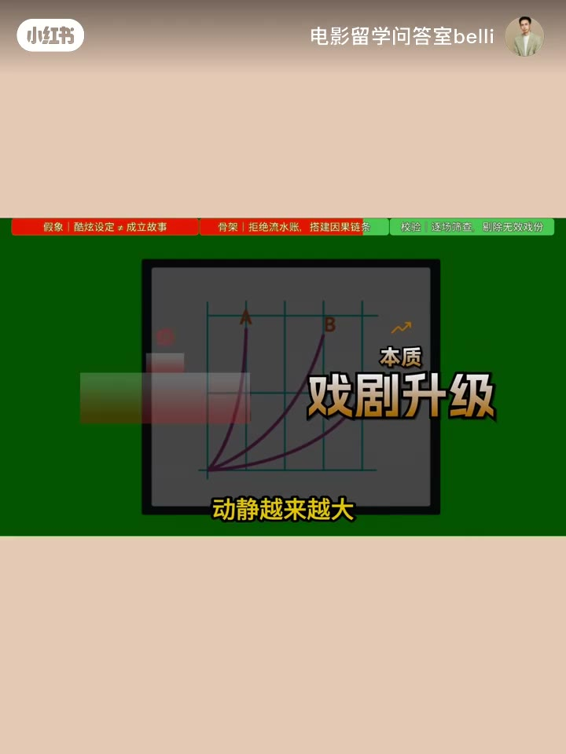
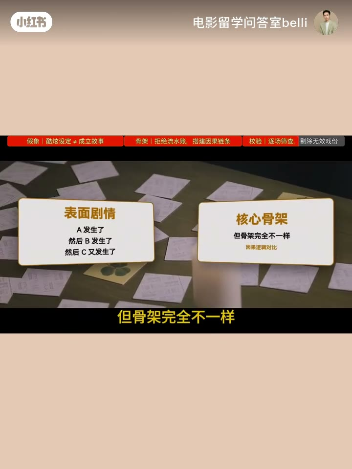
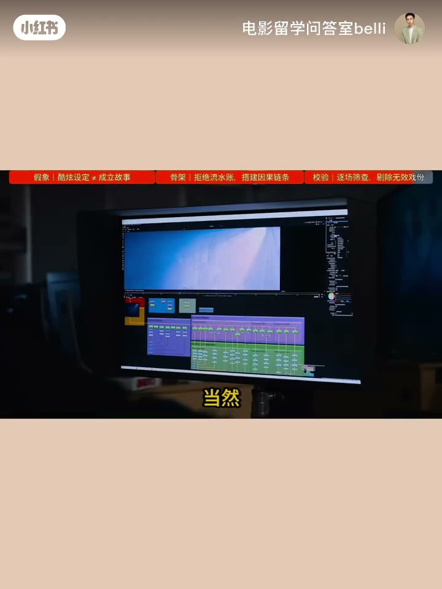

内容要点
剧本深度专题中集：设定好却越写越散——戏剧问题须逼出选择（《楚门》），因果链替换「然后」，升级看代价，场景功能可删则删；AI 稿重点查因为还是然后。
知识结构
设定有意思但场次没连上。
设定必须逼出选择（楚门离开）。
因为链；寄生虫秘密递进。
代价升高；删掉无差则删。
必然性；AI 查因为 vs 然后。
设定→无法逃避的选择；因为→不得不；升级=代价；每场必须改变处境。
00:00–00:50设定很酷，为什么越写越散
中集专打「第一场特别牛、第三场突然不知道为什么」。很多本子不是没东西，是彼此没连起来。设定有意思，但往下走剧情没有真正咬住——「我有一个很酷的设定」和「这是一部成立的电影」是两回事。


00:50–01:45戏剧问题：设定必须逼出选择
时间冻结只剩自己、每天回到昨天——听着都有趣。但《楚门的世界》真正推动故事的不是「何时发现真相」，而是知道真相后「敢不敢离开」。设定最后必须逼出一个无法逃避的问题/选择，再制造下一个问题。先别往下写，问：我的设定究竟逼出了人物什么无法逃避的问题？没有，就还只是有意思，不是戏剧。
01:45–02:50因果链 Cause & Effect
骨架是因果：不是「然后发生了什么」，而是「因为发生了什么，所以接下来不得不发生什么」。A→B→C→D 链成立，故事才会自己往前跑。把剧本里的「然后」揪出来，问上一场结束后为什么必须进下一场、人物为什么现在必须做这决定。若答案是「剧情需要」——通常是编剧在推人物。成熟剧本相反：前面的选择逼着后面发生。《寄生虫》前提只是穷家进富家工作；厉害的是进去后一个选择制造下一后果，秘密逼出秘密，为维持局面又做新选择，直至失控。


02:50–03:40升级 Escalation + 场景功能
升级不是吵架→打架→爆炸、动静越来越大。真正的升级是代价越来越高、选择越来越难：先解决小问题，后来要牺牲更重要的东西，再往后连不选择本身都成了选择。场景功能（Scene Purpose）：一场一场查——处境/信息/关系变了吗？下一步更难了吗？删掉前后无差别，好看也不是存在理由。

03:40–04:37缜密：必然性 + AI 自检
一键生成也能给你人物事件反转三幕，但要查 A 是导致了 B，还是 A 然后 B 然后 C——表面都有剧情，骨架完全不同。真正缜密：回看时前面都在为后面制造必然性，前瞻时觉得下一步只能这么走。留作业：有没有一场戏自己觉得挺好、删了也不知影响？下一集讲专业编剧怎么判断留删与成片可能。

完整转录（177段）
Whisper medium · 中文 · 已做术语校正，仍可能有识别误差。
父老乡亲朋友们节日好啊
感谢本场这一期
我们聊一聊为什么有些剧本设定很好
可到后面却越来越散
一个剧本最怕的不是没创意
而是第一场特别牛
第二场也挺远
到了第三场
诶 怎么突然不知道为什么了
很多剧本不是没东西
是彼此之间没连起来
那一个剧本到底怎么样才算真正完整缜密
有一位朋友后来直接把自己的作品发给我
问我
老师
我这个故事设定明明挺有意思的
为什么我自己越看越觉得不对
我看了一下
其实这个问题特别典型
设定没问题
问题出在设定往下走以后
剧情没有真正咬住
所以今天我们就专门讲这个
很多人刚开始写剧本的时候
很容易先想一个特别大的设定
比如一个人醒来以后
发现全世界只有自己没有被时间冻结
或者一个女孩发现
自己每天醒来都会回到前一天
这些东西一听
是不是都挺有意思
但是我有一个很酷的设定
和这是一个成立的电影
其实是两回事
因为故事真正开始以后
马上就会出现一个问题
比如楚门的世界
一部特别有想象力的喜剧电影
主角楚门突然有一天突然发现
摄像机从天上掉到了跟前
自己生活的整个世界似乎都是假的
但真正推动故事的并不是
楚门什么时候发现真相
而是当他知道真相以后
他敢不敢离开
你看戏剧一下就出来了
因为设定最后必须逼出一个选择
而这个选择又会制造下一个问题
那这时候关键的就来了
这个地方大家可得记住了
如果你现在正在写剧本
先别急着往下写
问自己一句
我的这个设定
究竟逼出了人物什么无法逃避的问题
如果这个问题都没有
那你的设定可能只是有意思
还没有真正变成戏剧
如果觉得这个知识点对你有用
必须一键三连先走一个
接下来就是剧本真正的骨架
cause effect因果关系
这个东西会直接决定你的剧本
是不是越写越散
说白了
不是然后发生了什么
而是因为发生了什么
所以接下来不得不发生什么
人物做了A
所以发生B
因为B人物只能做C
C又制造D这条链一直成立
故事才会自己往前跑
所以你可以拿自己的剧本
做一个狠狠的检查
把里面的然后泡沫找出来
然后问为什么上一场戏结束以后
为什么必须进入下一场
这个人物为什么现在必须做这个决定
因为剧情需要
那啥
这时候你就要警惕了
通常不是人物在推动剧情
是编剧在推人物
真正成熟的剧本恰恰相反
前面的选择逼着后面的事情发生
比如寄生虫
一个贫困家庭进入一个富裕家庭工作
只是故事前提
真正厉害的是
进去以后一个选择会产生下一个后果
一个秘密会逼出另一个秘密
人物为了维持眼前的局面
又不得不做新的选择
于是事情开始越来越失控
这就涉及一个很重要的概念
Escalation
升级
注意啊
升级可不是第一场吵架
第二场打架
第三场直接爆炸
动静越来越大
不等于戏剧越来越强
真正的升级是
代价越来越高
选择越来越难
开始只是解决一个小问题
后来发现
解决它要牺牲另外一个更重要的东西
再往后
甚至连不选择本身都成了一种选择
这时候观众才会真正紧张
还有一个特别实用的东西
Scene Purpose
场景功能
写完以后
一场一场检查
这场戏到底改变了什么
人物处境变了吗
信息变了吗
关系变了吗
下一步是不是更难了
如果删掉这一场
前后完全没区别
诶
那就得问
这场戏为什么存在
别跟我说
因为拍出来挺好看
好看不是它存在的理由
所以现在你再回头看那些
一键生成的完整剧本
会发现问题其实很清楚
它不是没有故事
恰恰相反
人物
事件
反转
甚至三幕结构
都可以很快给你
但真正需要检查的是
A到底是不是
导致了B
还是
A发生了
然后B发生了
然后C又发生了
表面都有剧情
但骨架完全不一样
所以一个剧本真正的缜密
不是信息多
也不是反转多
而是你往回看的时候发现
前面发生的事情
都在为后面制造必然性
而往前看的时候
又觉得下一步
好像只能这么走
这时候剧本才真正活起来
最后留个问题给大家
你现在正在写的剧本里
有没有一场戏
你自己都觉得好像挺好
但删了也不知道有什么影响
把它留在评论区
当然
大家要是有其他想听的话题内容
也可以留言
下一期我们就拿这个问题
继续往下拆
一个剧本写完以后
专业编剧到底怎么判断
哪些该留
哪些该删
以及它到底有没有
成为一部电影的可能